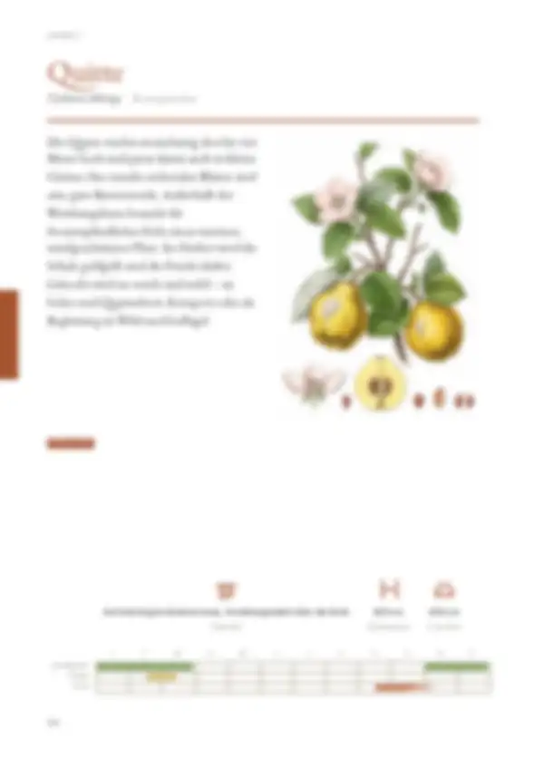
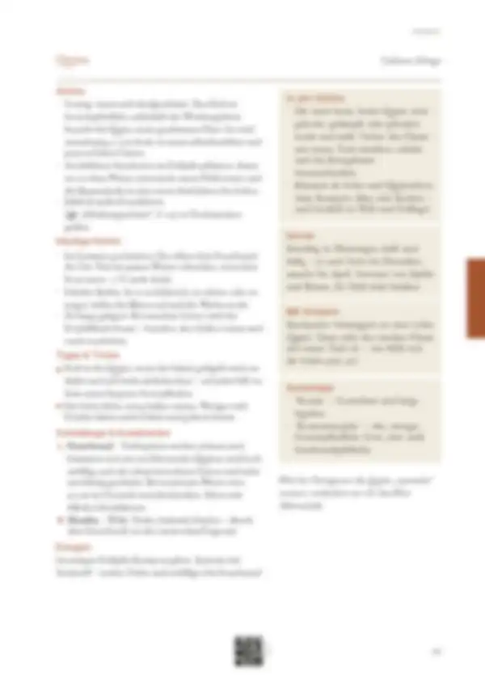

Tippe eine Quelle an, um zu sehen, wo sie verwendet wird – oder tippe auf einen Bereich der Seite.
7 Quellen dieser Doppelseite
Original · abgerufen am 26.10.2026 · ◐ ErfahrungVerwendet in: Zusammenfassung (Seite allgemein), Monatsleiste, Anbau, In der Küche, Vorrat, Häufige Fehler, Mit Kindern, Tipps & Tricks, Sortentipp, Schädlinge & Krankheiten, Geschichte, Düngen
Original · abgerufen am 26.10.2026 · ◐ ErfahrungVerwendet in: Zusammenfassung (Seite allgemein), Anbau, In der Küche, Vorrat, Häufige Fehler, Mit Kindern, Sortentipp, Schädlinge & Krankheiten, Geschichte
Original · abgerufen am 26.10.2026 · ● belegtVerwendet in: Zusammenfassung (Seite allgemein), In der Küche, Vorrat, Häufige Fehler, Mit Kindern, Tipps & Tricks, Sortentipp, Schädlinge & Krankheiten, Geschichte, Düngen
Original · abgerufen am 26.10.2026Verwendet in: Zusammenfassung (Seite allgemein), Monatsleiste, In der Küche, Vorrat, Häufige Fehler, Mit Kindern, Tipps & Tricks, Sortentipp, Geschichte
Original · abgerufen am 28.10.2026 · ◐ ErfahrungVerwendet in: Zusammenfassung (Seite allgemein), Piktogramm-Leiste, Anbau, In der Küche, Vorrat, Häufige Fehler, Mit Kindern, Sortentipp, Geschichte, Düngen
Original · abgerufen am 28.10.2026 · ◐ ErfahrungVerwendet in: Zusammenfassung (Seite allgemein), Monatsleiste, In der Küche, Vorrat, Häufige Fehler, Mit Kindern, Sortentipp, Geschichte
Original · abgerufen am 28.10.2026 · ◐ ErfahrungVerwendet in: Piktogramm-Leiste
● belegt (Versuch, Fachinstitut) · ◐ Erfahrung (Beratung, Praxis) · ○ Überlieferung. Abschnitte ohne eigene Quellenangabe in den Daten zeigen die Quellen der ganzen Seite („Seite allgemein“).